<div class="navbar navbar-expand-lg navbar-dark bg fixed-top py-3" aria-label="Eighth navbar example">
  <div class="container d-flex justify-content-between">
    <a class="navbar-brand fs-20 fw-bolder text-light" [routerLink]="['/']" routerLinkActive="active">PAYHUB</a>
    <button class="navbar-toggler collapsed border-0 shadow-none" type="button" data-bs-toggle="collapse"
      data-bs-target="#navbarSupportedContent" aria-controls="navbarSupportedContent" aria-expanded="false"
      aria-label="Toggle navigation" (click)="toggleMenu()">
      <span *ngIf="!show">
        
      </span>
      <span *ngIf="show">
        
      </span>
    </button>
    <div class="navbar-collapse  collapse scale-in-ver-top" id="navbarSupportedContent">
      <ul class="navbar-nav ms-auto mb-2 mb-lg-0">
        <li class="nav-item">
          <a class="nav-link text-light fs-20" aria-current="page" [routerLink]="['/home']"
            routerLinkActive="active">Home</a>
        </li>
        <li class="nav-item mx-4">
          <a class="nav-link text-light fs-20 faq" aria-current="page" [routerLink]="['/faq']"
            routerLinkActive="active">FAQ</a>
        </li>
        <li class="nav-item">
          <!-- <button type="button" class="btn btn-secondary">Get Started</button> -->
          <a class="nav-link text-light fs-20 px-3 rounded-pill" [routerLink]=" ['/auth/create']"
            routerLinkActive="active">Get Started</a>
          <!-- <button type="button" class="btn btn-light  rounded-pill shadow-none" [routerLink]=" ['/auth/create']"
            routerLinkActive="active">Get Started</button> -->
        </li>
      </ul>
    </div>
  </div>
</div>